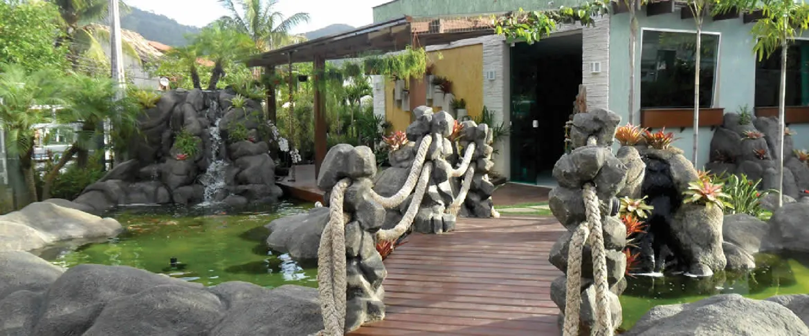
Jardins
Criamos ou modificamos seu jardim.
Ter a natureza por perto realmente faz uma grande diferença na vida das pessoas.
A Vida e Arte Paisagismo é uma empresa que prima pela execução de projetos personalizados, conduzidos por um atendimento único, do projeto mais simples ao mais complexo — em Itaipú, Niterói.
O que já construímos
Os próprios projetos realizados, divididos como a empresa os organiza.

Criamos ou modificamos seu jardim.
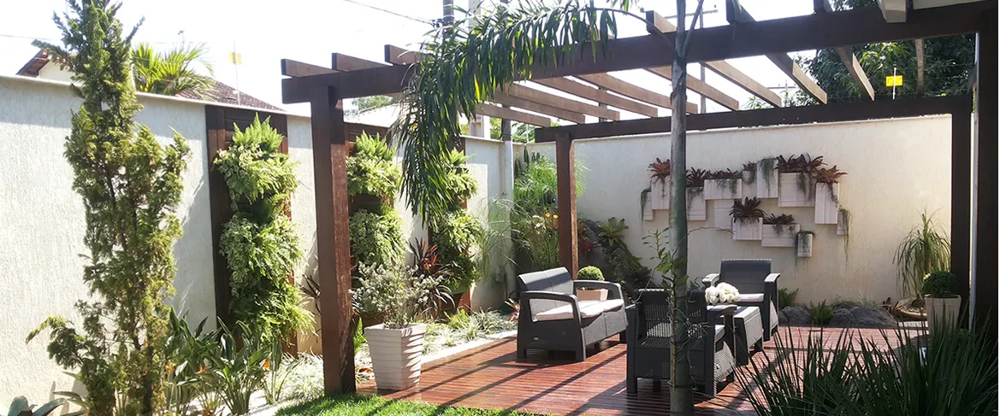
Jardim vertical e deck de madeira, um dos últimos serviços realizados.
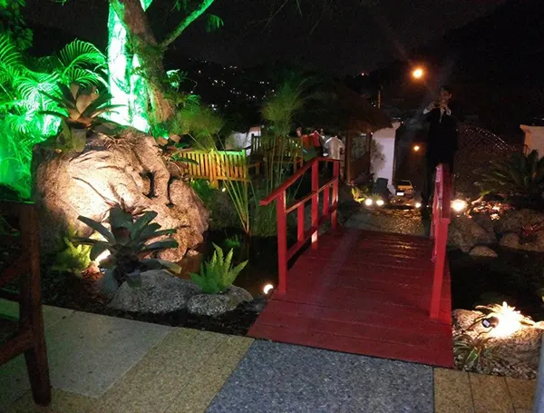
Pode ser feito em vários tamanhos e formatos diferentes.
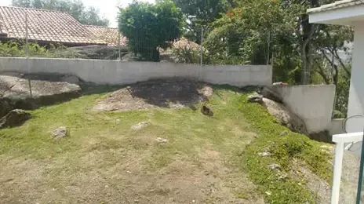
Antes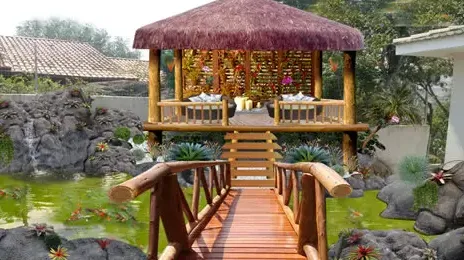
DepoisQuiosque de piaçava — um dos últimos projetos realizados.
Como trabalhamos
Criamos ou modificamos seu jardim. Realizamos todos os tipos de serviços de paisagismo, do projeto mais simples ao mais complexo, para transformar seu sonho em realidade.
Jardim vertical e deck de madeira estão entre os últimos serviços realizados pela equipe, aliando parede verde a estrutura de madeira sob pergolado.
Lagos: pode ser feito em vários tamanhos e formatos diferentes. Cascatas: pode ser feito em vários tamanhos e formatos. O lago com ponte é um dos projetos já entregues.
Gazebo de piaçava é um dos serviços oferecidos. O quiosque de piaçava ao lado, construído sobre o lago, é um dos últimos projetos realizados pela equipe.
Também fazem: painéis em madeira, polietileno, ferro, alumínio, pedra porosa ou resina, e locações.
Produtos
Criação de peças em resina de diversos tamanhos e modelos, tornando-se um produto, diferenciado, resistente e único. Uma verdadeira obra de arte.
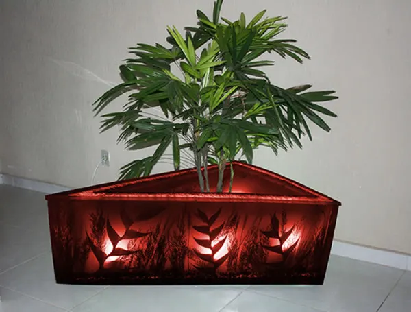
Floreira iluminada
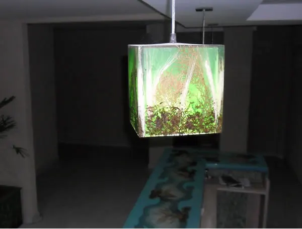
Luminária pendente
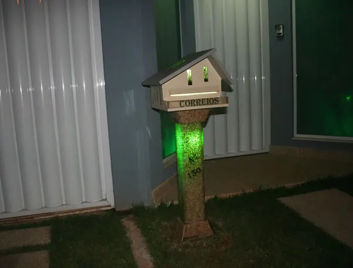
Caixa de correio
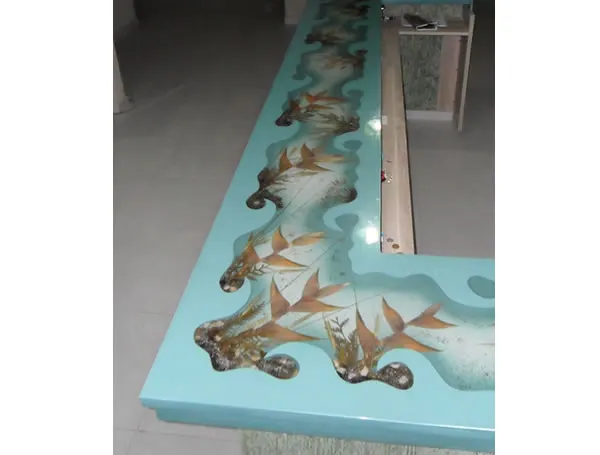
Peça com peixes
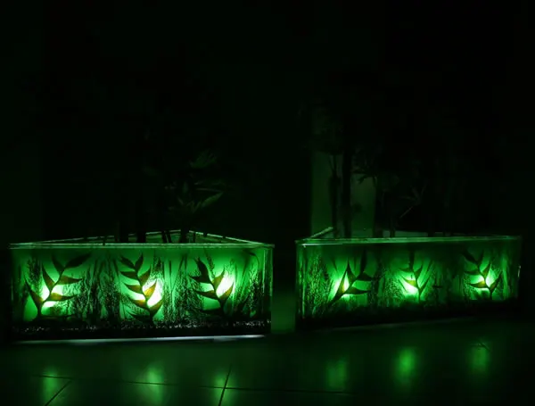
Floreiras iluminadas
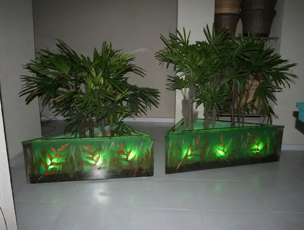
Floreiras com planta
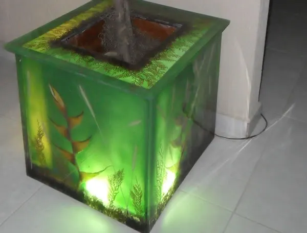
Floreira com planta
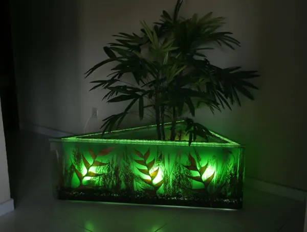
Floreira com planta
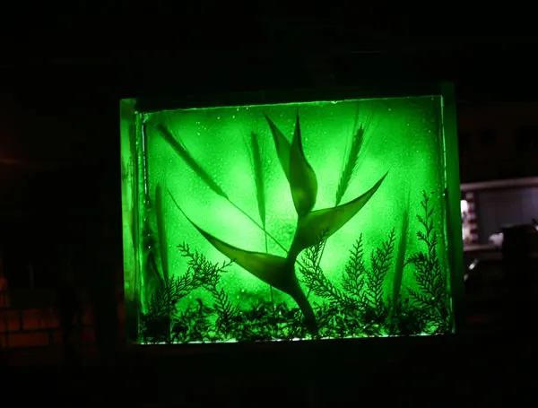
Peça iluminada
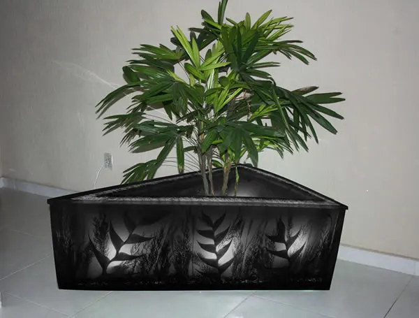
Floreira com planta
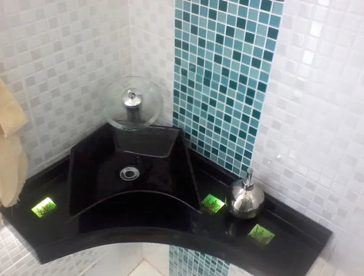
Bancada com resina
Manutenção
Realizamos manutenções em jardins, lagos e aquários.
Atendimento
Av. Ewerton da Costa Xavier, Nº4900 — Itaipú, Niterói - RJ
Atendimento em Niterói e região, incluindo Maricá e São Gonçalo.
Gerar qualidade de vida, transformando espaços comuns em ambientes vivos e agradáveis para o convívio familiar e socialização.
Contato